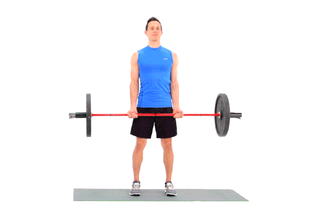
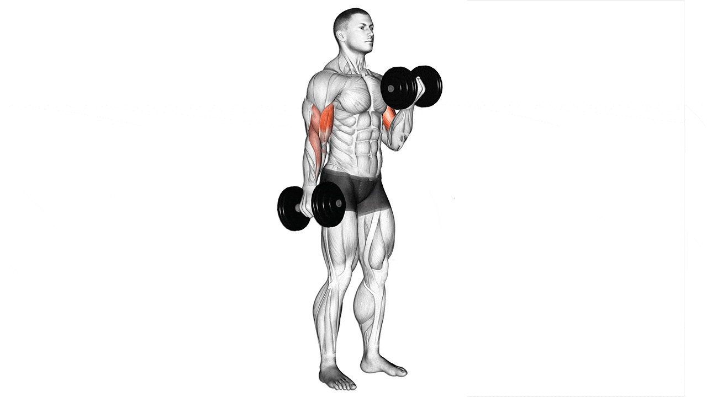
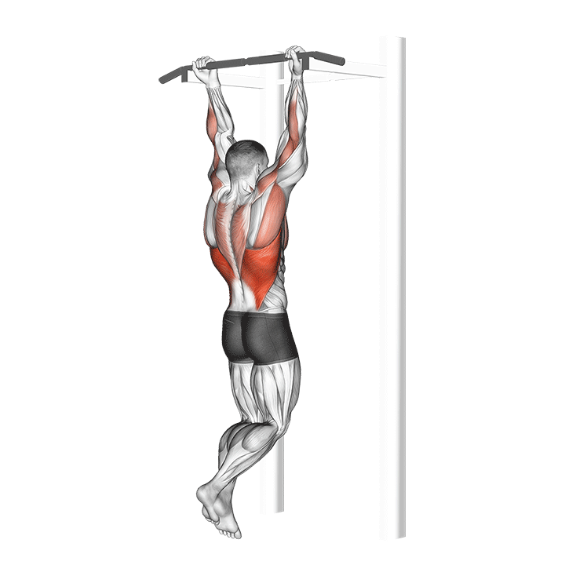
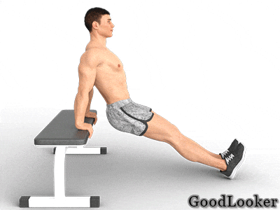
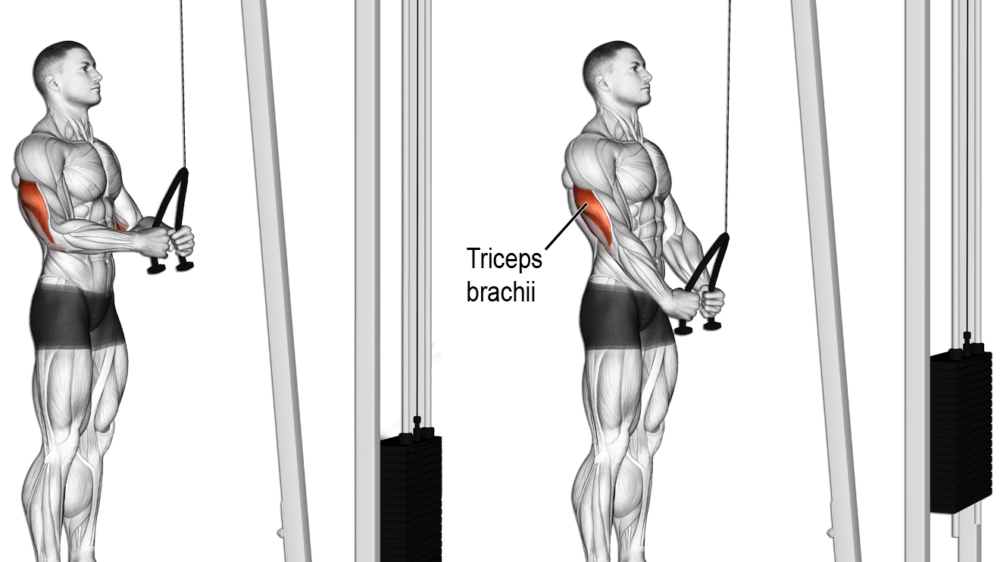

Программа тренировок
Программа тренировок должна состоять из 3х дней в неделю, тут мы рассмотрим базовую программу тренировок для наращивания мышечной массы.
Первый день
Бицепс, трицепс:
1. Подъем штанги на бицепс

2. Поочередный подъем гантелей на бицепс

3. Подтягивания обратным хватом

4. Обратные отжимания

5. Разгибание рук на блоке

Все упражения делаем 3 подхода по 10 повторений
Так же можете посмотреть дополнительное видео о том, как правильно качать бицепс и трицепс, а так же понять правильную технику.
Программа тренировок на спину, плечи
Программа тренировок на грудь и ноги
Питание